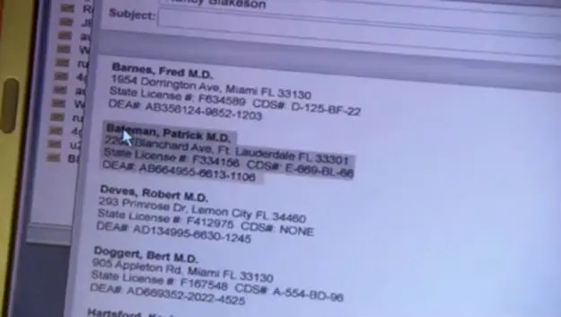

Michael C. Hall and Jennifer Carpenter (who played siblings Dexter and Deb) were married in real life from 2008-2010.

Michael C. Hall wore a wig in Season 5 due to chemotherapy.
Dexter's first name for fake IDs, "Patrick Bateman," is from the novel/movie American Psycho.